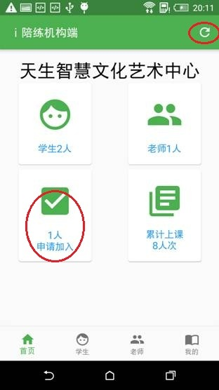
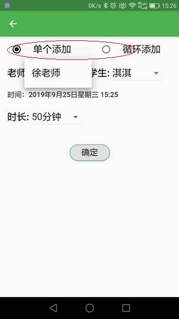
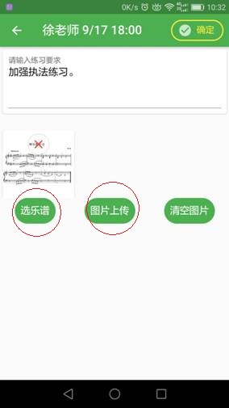

i陪练机构端使用指南
i陪练是为琴行和乐器培训学校量身打造的在线钢琴陪练平台，是一套帮助琴行提升经营效益的优化方案。通过一对一在线视频陪练解决琴童在课后学完不练，回课质量差等问题。通过整合学校、老师、家长等所有资源，为学校提供一站式练琴管理方案，实现主课、陪练课、学生三方无缝对接，提升学校（琴行）的经营效率。
第一步：新机构入驻
1、管理员下载"i陪练-机构端", 使用手机验证码登录。
 |
2、登录之后创建我的机构，输入机构信息，保存
 |
 |
第二步：加入教师和学生
在i陪练机构端底部导航栏点击“我的”-“邀请”，让教师和学生扫二维码或者通过微信QQ等分享下载链接给教师和学生，其中教师和学生对应分为安卓和苹果两个不同系统的二维码和链接，教师和学生下载对应的App，用手机号验证码登录。
 |
 |
教师和学生登录对应的APP后自动进入“我的机构”界面，输入机构名称，点查询，选择加入刚刚创建的机构。
 |
管理人员在"i陪练机构端APP"右上角点“刷新”，可以看到有教师和学员申请加入，点击“申请加入”，通过人员加入申请。
|  |
第三步：如何给学生和老师安排课程
管理员进入“i陪练机构端”，点击导航栏底部“学生”菜单进入学生列表，给学生排课，可添加单节课程，也可按周循环添加多节课程。
 |
 |
第四步：如何开始上课
1.学生进入“i陪练学生端”，点击底部导航栏的“课程”菜单，在课程列表中选择要上的课，点击“上传曲谱”，可在曲谱库中选择乐谱，也可选择照片或拍照上传，同时可输入上课要求。
 |
 |
2.距离上课时间5分钟内可以打开视频，教师和学生可调整手机位置、音量大小等准备工作。
3.上课时教师可以打开曲谱，进行划线、撤销、翻页等操作。
 |
 |
4.距离陪练时间结束5分钟前系统开始倒计时提示，超过一分钟后视频关闭。
5、课后教师对学生练习表现进行点评，学生家长代学生对老师进行评价。
附注：机构如何向学员推荐线上陪练
邀请学生和教师下载app并加入机构。
安排学生体验线上陪练课，了解流程，体验效果。
正式安排线上陪练。